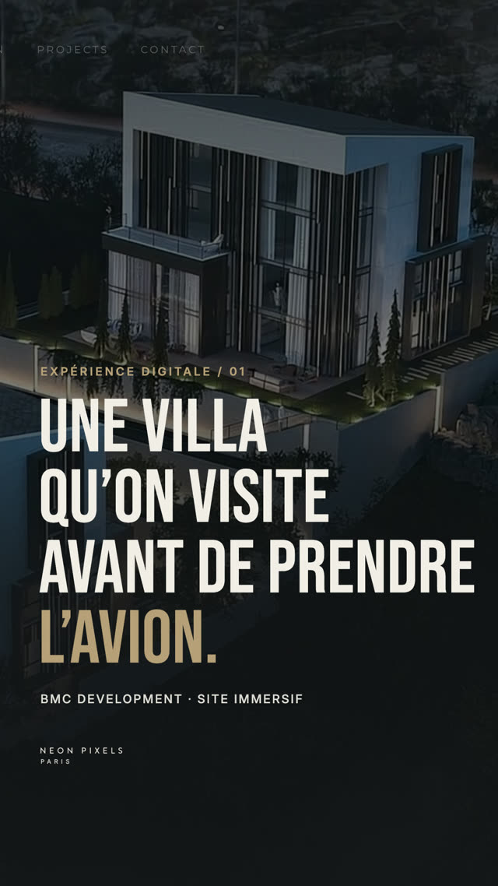

BMC Development reel

What each card says
- Cover: "A villa you visit before boarding the plane." BMC Development · Immersive website
- "For a buyer abroad, the website is the first contact with the property."
- "Each residence has its own chapter."
- "Full screen, slow transitions: architecture first."
- "A selection of residences. Not a property portal."
- End card: logo, neonpixels.fr, "Free Neon Diagnostic · link in bio"
Why it works for visitors
The hook speaks from the buyer's side, exactly in the style of Ivana's example. Visitors see a real site in motion on a phone, the way they would use it, and learn why it was built that way.
Caption
BMC DEVELOPMENT · LIBAN LE DÉFI Présenter une sélection de résidences privées à des acheteurs qui les découvrent à distance, sans reprendre les codes d’un portail immobilier. NOTRE APPROCHE Une séquence plein écran où chaque résidence a son chapitre : un grand visuel, une présentation courte, les informations clés. L’EXPÉRIENCE Des transitions lentes qui laissent l’architecture au premier plan, et un accès WhatsApp à chaque étape de la visite. LE RÉSULTAT Un acheteur à l’étranger découvre chaque résidence comme une visite, et peut écrire à BMC sans quitter le site. Site immersif · Direction artistique · Développement Découvrir nos réalisations → lien en bio NEON PIXELS® PARIS #BMCDevelopment #SiteImmersif #Architecture #WebDesign #NeonPixels